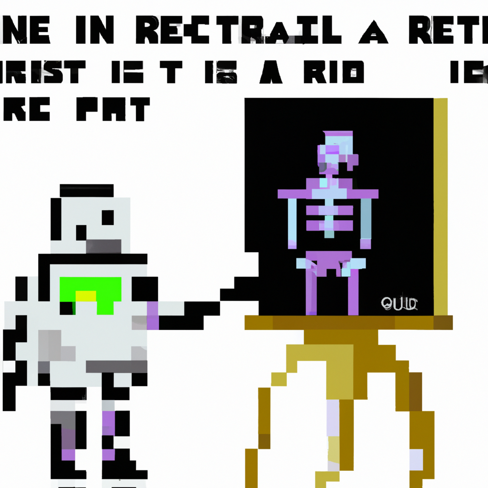

Why AI will never replace the radiologist
As technology advances, questions arise about the future of jobs in the medical field. One of the most talked-about roles is that of the radiologist. With the development of artificial intelligence (AI) and machine learning, many wonder if AI will eventually replace radiologists. In this blog post, I’ll explain why I think that AI will never replace the radiologist.
First, it’s important to understand the complexity of the job. Radiologists must have a deep understanding of the human anatomy and physiology in order to accurately interpret imaging. AI is not yet capable of understanding the nuances of the human body, and so it cannot replace the expertise of a radiologist.
Second, radiologists are responsible for more than just the interpretation of images. They must also provide guidance to other medical professionals, such as surgeons and oncologists. AI cannot provide the same level of advice because it lacks the insight and experience of a radiologist.
Finally, radiologists are essential for providing patient care. AI cannot provide the same level of personalized care. Radiologists are able to provide empathy and comfort to patients, something that AI simply cannot do.
In conclusion, AI will never replace the radiologist due to its lack of expertise, guidance, and personalized care. Radiologists will always be an essential part of providing quality healthcare.